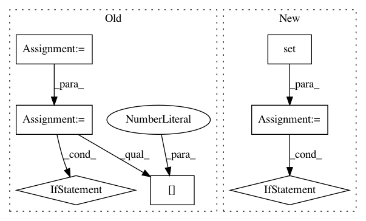

a5f83e8f1e29c62070333d6ce48009e2fdb323b9,inferno/net.py,NeuralNet,initialize_callbacks,#NeuralNet#,192
Before Change
return names_and_cbs
def initialize_callbacks(self):
callbacks = [cb() for cb in self.default_callbacks]
callbacks += self.callbacks or []
names_and_cbs = self._get_callbacks_and_names(callbacks)
names = list(zip(*names_and_cbs))[0]
if len(names) != len(set(names)):
// TODO: more useful message
raise ValueError("There are callbacks with duplicate names.")
callbacks_ = []
for name, cb in names_and_cbs:
params = self._get_params_for("callbacks__{}".format(name))
cb.set_params(**params)
After Change
yield name, cb
def initialize_callbacks(self):
names_seen = set()
callbacks_ = []
for name, cb in self._yield_callbacks():
if name in names_seen:
raise ValueError("The callback name "{}" appears more than "
"once.".format(name))
names_seen.add(name)
params = self._get_params_for("callbacks__{}".format(name))
if isinstance(cb, type): // uninitialized:
In pattern: SUPERPATTERN
Frequency: 3
Non-data size: 7
Instances
Project Name: dnouri/skorch
Commit Name: a5f83e8f1e29c62070333d6ce48009e2fdb323b9
Time: 2017-07-19
Author: benjamin.bossan@ottogroup.com
File Name: inferno/net.py
Class Name: NeuralNet
Method Name: initialize_callbacks
Project Name: home-assistant/home-assistant
Commit Name: bfb5089ed59f1df8cf53a3b517ac6b091f539a26
Time: 2015-03-08
Author: andyt05@gmail.com
File Name: homeassistant/components/device_tracker/nmap_tracker.py
Class Name: NmapDeviceScanner
Method Name: _update_info
Project Name: rtavenar/tslearn
Commit Name: 85aabb5014e22659ac722280607a1f4b44e1fb32
Time: 2020-05-03
Author: romain.tavenard@univ-rennes2.fr
File Name: tslearn/shapelets.py
Class Name: ShapeletModel
Method Name: fit